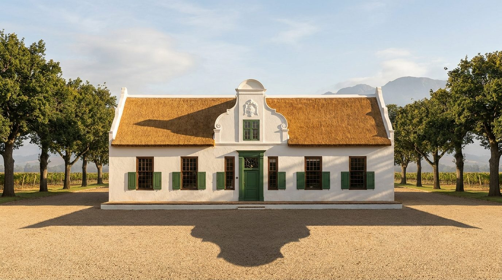
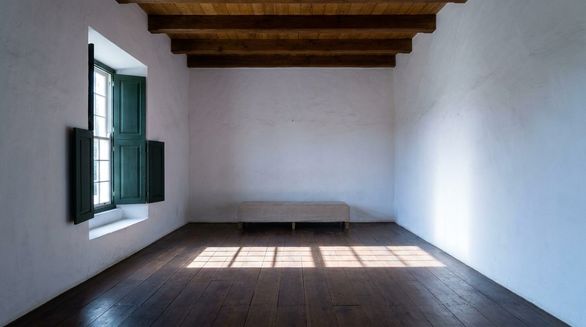

Atlante · INT-ZA-02 · Sudafrica · Africa
Tenuta Cape Dutch tra Stellenbosch e Franschhoek, calce e querce
Esempi · esterno e interno


Perché funziona
In Sudafrica il compratore del Winelands compra una casa che ha già una storia e un paesaggio: l'arredo italiano serve a dimostrare che il bianco di calce può convivere con un oggetto contemporaneo senza perdere autorevolezza. Per Poetica questa voce offre il fondo più severo del catalogo, un guscio di 500 mm di muro e una luce che entra da lontano, dove il prodotto si misura in silenzio. Il made in Italy è la precisione del profilo in legno e la cucitura del lino, non il lampadario in ferro battuto né il copriletto a fiori. Non deve diventare una guest house coloniale: niente cimeli, niente pelle, niente caccia.
Architettura · elementi riproducibili
- pianta a H su un piano, stanze 5,0x4,2 m di luce netta, altezza 3,2 m al colmo
- muri in laterizio intonacati a calce, spessore 500 mm, strombatura finestre 300 mm
- timpano centrale largo 4,5 m, h 2,6 m sopra la gronda, cornice a 80 mm
- tetto in paglia, pendenza 45°, travi 150x150 mm a interasse 900 mm
- finestra a ghigliottina 1,2x1,8 m di luce netta, traverso a 1,1 m, ante a 12 vetri
- pavimento in rovere 150x1800 mm, giunto 2 mm, olio opaco, posa in fuga continua
- proporzione chiave: facciata lunga 24 m contro 4,5 m alla gronda, orizzontale 5:1
Fatto verificato: la Cape Dutch architecture è caratterizzata da muri imbiancati a calce, copertura in paglia, finestre a vetri piccoli, persiane esterne in legno, impianto a H e dettagli verdi su porte e persiane (Wikipedia, Cape Dutch architecture).
Fatto verificato: Boschendal si trova tra Franschhoek e Stellenbosch; i titoli della fattoria risalgono al 1685 e la casa padronale oggi restaurata fu completata nel 1812 da Paul de Villiers (Wikipedia, Boschendal).
Fatto verificato: Stellenbosch, fondata nel 1679, è la seconda città più antica del Sudafrica ed è detta City of Oaks per le querce piantate dal fondatore Simon van der Stel (Wikipedia, Stellenbosch).
Valutazione: la direzione tenuta regge e chiude il Sudafrica; la luce radente da strombatura profonda e il bianco di calce contrastano con la luce pomeridiana piena e l'arenaria di int-za-01, pur restando entrambe quiet.
Luce
Prompt di generazione (EN)
Interior of the central hall of a Cape Dutch manor house in the Franschhoek valley, empty except for one low bench in raw linen. Whitewashed lime walls, matt, brush marks visible; floor of wide dark oak boards with a 2 mm joint; ceiling of exposed beams and yellowwood boards; a tall sash window in a 300 mm splayed reveal on the left, green painted shutters folded back. A single key light: low eastern sun at 18 degrees, 5200 K, throwing a hard bright rectangle across the oak floor, the rest of the hall two and a half stops down and cool. 30 mm lens, camera at 1.45 m, two-point perspective, verticals parallel. Grade neutral, whites clean not creamy, shadows slightly cool. no people, no text, no logos